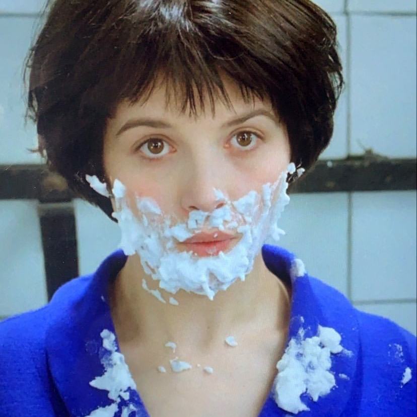

Hi Eileen,
Nice to meet you!
I would like to briefly share some works and other things about myself with you :)
1)
Fragments in an Anonymous Building is a website i did for the Third Semster Review. It includes most of my works and some writings.
(And here is my mind map.)
2)
The Experience of Aura is my candidacy book at the end of the second semester, which also comes with a website.
3)
Here is a video i made for pechakucha.
googoooomuck is another name of mine, which means a teenage vampire.
4)
I enjoy all kinds of art, sometimes they might not be art.
I like Walter Benjamin, Virginia Woolf and Barthes.
I especially like ficitons by Tolstoy, Georges Perec and Enrique Vila-Matas...The structure and language of literature influence my method of working.
I like Rembrandt, Paul Klee and Francis Picabia. (etc)
I like Chris Marker, Alain Resnais, Jacques Rivette, Agnès Varda, Raoul Ruiz and Godard. I also enjoy films by Tarkovsky, Werner Herzog, Jonas Mekas and Charlie Kaufman (etc)!
I like poems by Rimbaud. I admire Nietzsche.
I like objects and garments.
I love insects and all the animals.
The last thing...my favorite actress is Juliette Binoche!

Thanks!
- june, 01-28-2021, 8:44pm